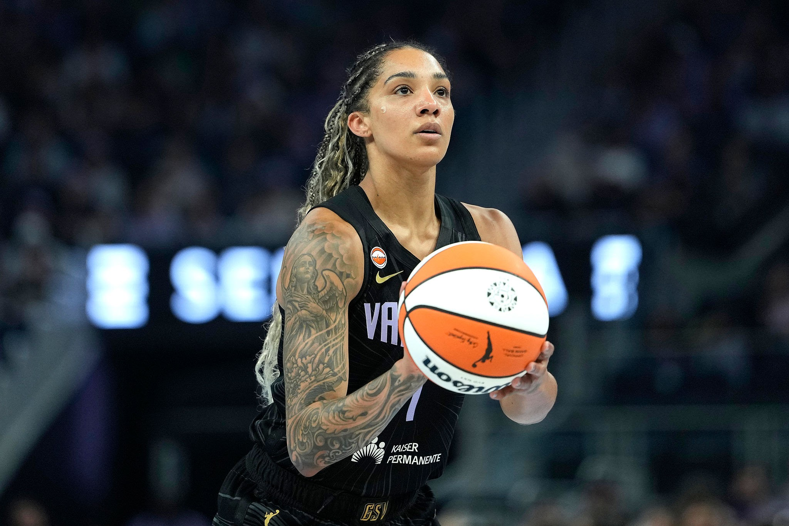

INTRODUCTION
Gabby Williams, née le 9 septembre 1996 aux États-Unis, est une basketteuse franco-américaine reconnue pour son talent et ses qualités défensives. Après avoir remporté deux titres NCAA avec l’Université du Connecticut, elle est draftée en 2018 par les Chicago Sky. Internationale française depuis 2021, elle remporte le bronze aux JO de Tokyo en 2021 et l’argent à Paris en 2024. En 2026, elle devient championne WNBA avec les Golden State Valkyries et MVP des finales.
GABBY WILLIAMS

RESUME
Gabby Williams a remporté de nombreux titres au cours de sa carrière. Elle est double championne NCAA (2015 et 2016) et médaillée de bronze aux JO de Tokyo en 2021, puis d’argent à Paris en 2024. En club, elle remporte l’EuroLeague en 2022 et 2026 et est plusieurs fois élue meilleure défenseuse. En 2026, elle devient championne WNBA et MVP des finales avec les Golden State Valkyries. Elle reçoit également le trophée Alain Gilles en 2024 et 2026, récompensant le meilleur joueur ou la meilleure joueuse française de l’année.